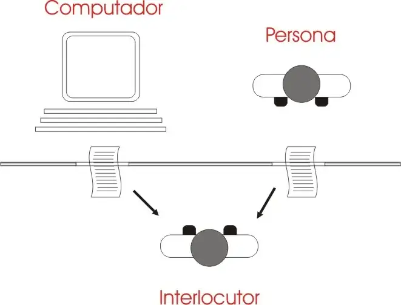
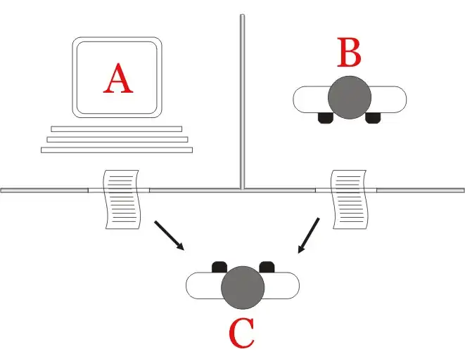
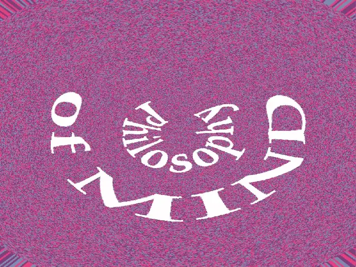

The argument for
Hilary Putnam's multiple realizability argument (1967) observed that the same mental state — pain, say — is realised by different physical states in different species. If what makes it pain is the functional role rather than the chemistry, then the chemistry is not essential.
Maps, diagrams and images






Computationalism adds that cognition is computation over representations, and computation is substrate neutral by definition: a program is defined by its formal structure, not by the machinery that implements it. This is the assumption behind whole-brain emulation research and most of the philosophy of AI.
The practical version is the strongest: if you can reproduce the causal organisation of a brain closely enough, behaviour follows, and if behaviour follows then whatever we care about in minds is probably preserved. Sandberg and Bostrom's 2008 roadmap treats this as an engineering question.
The argument against
Searle's biological naturalism is the direct denial: consciousness is a biological phenomenon caused by specific processes in specific tissue, in the way digestion is caused by a stomach. Simulating digestion does not digest, and simulating a brain would not think.
The hard problem sharpens it. Even a perfect functional duplicate leaves open why there is something it is like to be it. If experience is not exhausted by function, then function is not enough, and the substrate question is reopened.
A third line comes from embodied and enactive cognition: minds may be constituted partly by a body's sensorimotor coupling with an environment, in which case a disembodied program is missing a constitutive part rather than merely a convenient one.
The test is obvious in principle: build a system that behaves like a mind, then determine whether it is one. The second half is the problem — we have no independent measure of consciousness, only reports.
Integrated information theory makes a specific claim that substrate matters in a measurable way (the causal structure of the system), which is the rare case of a testable version of the dispute.
Current AI provides no evidence either way: language models are functionally impressive and their internal organisation is unlike a brain's, so neither camp gets what it needs from them.
The archive labels this live debate because it is a philosophical dispute with engineering consequences, and neither side has an experiment that decides it.
Why it is in the archive
Because whole-brain emulation, mind uploading and the moral status of AI systems all rest on this claim, and it is usually assumed rather than argued.
Related: the Chinese room, integrated information theory.
Sources for this page
- Wikipedia, “Multiple realizability” — the argument and its criticsen.wikipedia.org
- Wikipedia, “Functionalism (philosophy of mind)” — the position at issueen.wikipedia.org
- Sandberg & Bostrom (2008), Whole Brain Emulation: A Roadmapwww.fhi.ox.ac.uk
- Wikipedia, “Hard problem of consciousness” — why function may not be enoughen.wikipedia.org
Open resources on this topic
- BookDTIC ADA575018: Substrate Independence of THz Vibrational Modes of Polycrystalline Thin Films of Molecular Sol — Defense Technical Information Center · 2012 (Internet Archive, free to read)
- PapersOpen-access articles: DOAJ · PubMed Central · Internet Archive Scholar
- BooksPublic-domain and borrowable copies: Open Library · Project Gutenberg · Google Books
Cite this page
Momin, S. (2026). Substrate Independence. The Larger World Archive. https://drsamonline.github.io/LARGE_GLOBE/substrate-independence.htmlMomin, Sohil. “Substrate Independence.” The Larger World Archive, 2026, https://drsamonline.github.io/LARGE_GLOBE/substrate-independence.html.Momin, Sohil. “Substrate Independence.” The Larger World Archive, 2026. https://drsamonline.github.io/LARGE_GLOBE/substrate-independence.html.@misc{substrate2026substrate,
author = {Momin, Sohil},
title = {Substrate Independence},
year = {2026},
howpublished = {The Larger World Archive},
url = {https://drsamonline.github.io/LARGE_GLOBE/substrate-independence.html},
note = {Last reviewed 20 November 2026}
}Last reviewed 20 November 2026 · Corrections policy · this page is not peer reviewed